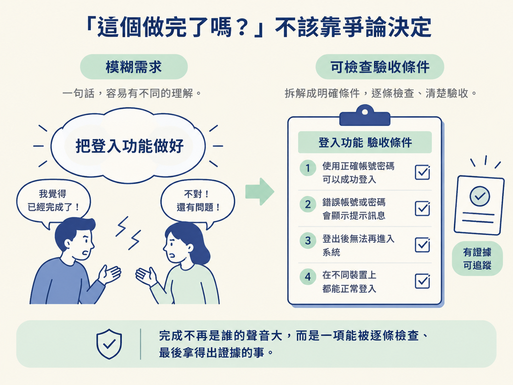
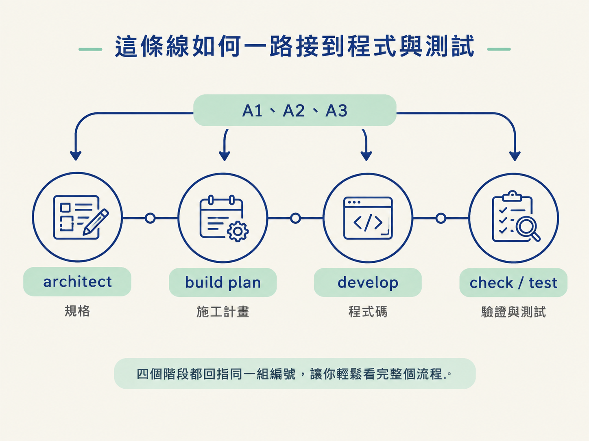

你將學會沿著一條 acceptance criterion，從決策追到程式碼、驗證與測試，並理解這條追蹤線為什麼能把「完成」變成可被證明的事。
想像一場常見的會議：工程師說「功能好了」，PM 卻發現登入後看到的是別人的任務。工程師接著說：「那是另一個問題吧。」兩邊都覺得自己有道理，但團隊其實沒有共同的「完成」判準。
當需求寫得模糊，完成與否就只能靠感覺，甚至靠誰的聲音比較大來決定。這套流程在各個檔案與階段之間，埋了一條細卻關鍵的線：acceptance criteria（驗收條件）。
它把「應該完成」改寫成可以逐項檢查的條件。於是，完成不再只是某個人的判斷，而是一件能一路追蹤、最後拿出證據的事。

architect 撰寫 spec 時，不只是在描述要做什麼，也會把每個需求轉成一條簡短、具編號的驗收條件。
例如：「已登入的人只看得到自己的任務。」這句話已經具體到可以直接檢查：畫面上顯示的任務是否都屬於目前登入者？答案只能是符合或不符合。
從這裡開始，追蹤線就有了起點。後續每個階段都要回指這些編號，而不是各自用一套說法描述工作。編號就像同一串門牌，讓大家知道自己正在處理的是哪一個需求。
在施工計畫裡，每個任務都要標明它服務哪一條驗收條件。因此，develop 的工作不只是「把登入頁做出來」，還要清楚指出它要滿足哪一條驗收條件。
develop 完成後，寫下的檢查步驟也應該從同一批驗收條件推導出來，並回指相同的編號。這樣一來，檢查的不是模糊的「看起來有做」，而是明確確認某一條需求是否真的被滿足。
接著由驗證與測試接手。check 在 verify 模式下，會實際啟動應用程式，執行這些檢查步驟，逐條確認應用程式的行為是否符合規格，而不是只看某個測試檔案有沒有通過。
最後，test 會把其中需要長期維持的條件鎖進測試套件。未來程式修改時，測試就能提醒團隊：這個行為不能悄悄消失。
把整條路放在一起看，就是：
需求從決策出發，接著落成滿足它的程式碼，再由驗證證明行為正確，最後由測試防止它日後悄悄壞掉。
四個階段都回指同一組編號，你就能沿著這條線走完全程，而不必在不同文件之間憑印象拼湊脈絡。

它帶來兩個重要保證。
第一，重要的事不會沒有被量測。每個需求都先被寫成可判斷的條件，再由後續階段承接。這能降低需求被遺忘，或被一句模糊的「差不多完成了」帶過的風險。
第二，沒有被證明的事，不會被標成完成。done 之所以可以宣告，是因為這條追蹤線已經走完，而不是因為某個人資深、聲音大，或覺得結果應該沒問題。
這也說明了上一節為什麼強調 develop 不會自行把功能標成 done。develop 只完成了「程式碼」這一段；驗證與測試還沒有接手。只有整條線都被走過，功能才算真正收尾。
acceptance criteria 是串起所有階段的那條線。architect 把每個需求寫成簡短、具編號的驗收條件；build plan 的每個任務標明它服務哪一條；develop 的檢查步驟回指同一批編號；check 在 verify 模式下實際啟動應用程式，逐條確認行為；test 則把需要長期維持的條件鎖進測試。決策、程式、驗證與測試共用同一組編號，讓「完成」成為可被證明的事。
不過，這條線不一定每次都要跑到同樣的長度。一個用完就丟的 prototype，和一個付款流程，顯然不該承受相同強度的驗證。
最後一節要處理的，就是如何決定這條追蹤線應該跑多遠，以及四種驗證深度：Prototype、Alpha、Beta、GA。